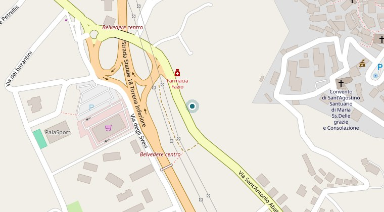
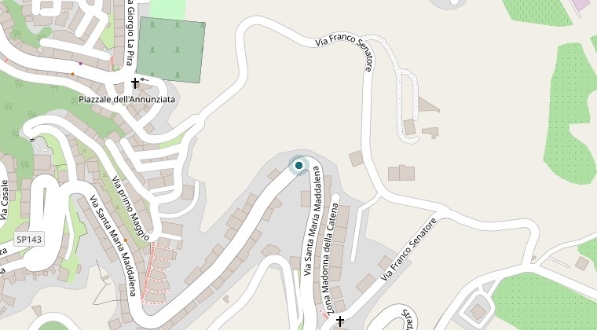

Visita cardiologica
Anamnesi, esame obiettivo e valutazione del rischio cardiovascolare, con gli esami strumentali eseguiti nel corso della stessa seduta:
- elettrocardiogramma
- ecocardiogramma color-Doppler
- ecocolordoppler dei tronchi sovraortici
Il cuore va controllato per tempo. Visita, esami strumentali e referto in un’unica seduta, con l’esperienza di oltre trent’anni di specializzazione in cardiologia.
Visita ed esami strumentali nello stesso appuntamento, eseguiti e refertati direttamente in studio. Nessuna prestazione richiede una preparazione particolare.
Anamnesi, esame obiettivo e valutazione del rischio cardiovascolare, con gli esami strumentali eseguiti nel corso della stessa seduta:
Registrazione dell’elettrocardiogramma o della pressione arteriosa nelle ventiquattro ore. Il tempo indicato è quello dell’applicazione dell’apparecchio: conclusa la registrazione, il tracciato viene refertato nei giorni successivi e il referto consegnato al paziente in copia cartacea.
Riservata ai pazienti già in carico allo studio: rivalutazione dei sintomi, degli esami eseguiti nel frattempo e della terapia in atto.
Visita ed elettrocardiogramma a riposo per il rilascio del certificato previsto dalla normativa vigente. Non viene rilasciata la certificazione per l’attività agonistica.
Un unico appuntamento, senza passaggi intermedi: al termine il paziente riceve il referto in copia cartacea e le indicazioni da seguire.
Si fissa telefonicamente. È utile indicare il motivo della visita ed eventuali esami recenti.
All’arrivo il personale infermieristico raccoglie i dati anagrafici e prende in consegna la documentazione medica portata dal paziente.
Raccolta della storia clinica e delle terapie in atto, esame obiettivo e misurazione della pressione arteriosa.
Elettrocardiogramma, ecocardiogramma color-Doppler ed ecocolordoppler dei tronchi sovraortici, quando indicati, vengono eseguiti nel corso della stessa seduta.
Il referto viene consegnato in copia cartacea al termine della visita e illustrato al paziente, con le indicazioni da seguire su terapia, esami ed eventuali controlli successivi. Su richiesta può essere trasmesso anche al medico curante.
Si raccomanda di portare la documentazione medica in proprio possesso, anche in copia, e l’elenco aggiornato dei farmaci assunti con i relativi dosaggi.
Medico chirurgo, specialista in Cardiologia e Nefrologia.
Elettrocardiografo, ecocardiografo color-Doppler con sonde convex e lineare per lo studio dei tronchi sovraortici, registratori Holter elettrocardiografico e pressorio. Tutti gli esami sono eseguiti e refertati direttamente in studio, senza rinvii ad altre strutture.
No. Lo studio è privato e le prestazioni non sono erogate in convenzione con il Servizio sanitario nazionale: l’impegnativa non è necessaria.
Al termine della visita, in copia cartacea, e illustrato al paziente. Fa eccezione il monitoraggio Holter, refertato nei giorni successivi alla registrazione. Su richiesta il referto può essere trasmesso anche al medico curante.
La documentazione medica in proprio possesso, anche in copia, e l’elenco aggiornato dei farmaci assunti con i relativi dosaggi.
Sì. In presenza di difficoltà motorie, di deficit uditivi o di terapie complesse è anzi consigliabile la presenza di un familiare o di chi assiste il paziente.
Telefonando allo studio con almeno 24 ore di anticipo, così da rendere disponibile il posto ad altri pazienti.
Sì. Lo studio di Belvedere Marittimo si trova al piano terra, senza barriere architettoniche, con parcheggio gratuito nelle immediate vicinanze.
Gli appuntamenti si fissano telefonicamente: non è prevista la prenotazione online. Per lo studio di Saracena si telefona direttamente allo Studio Laurito.
Si prega di indicare nome, recapito telefonico e motivo della visita. Si raccomanda di non inserire dati clinici dettagliati: verranno raccolti in sede di visita.
| Giorni | Orario |
|---|---|
| Lunedì, martedì, giovedì e venerdì | 15:30–20:00 |
| Mercoledì e sabato | 9:00–13:00 |
| Domenica e festivi | chiuso |
Si riceve solo su appuntamento.
Risposta telefonica: Lunedì–Venerdì 15:30–19:30.
Via Sant’Antonio 20 — 87021 Belvedere Marittimo (CS)
Studi Medici, piano terra: nessuna barriera architettonica. Parcheggio gratuito.

Apri le indicazioni stradali (si apre in una nuova scheda) Mappa © OpenStreetMapVia Santa Maria Maddalena 36 — 87010 Saracena (CS)
Il Dott. Grosso riceve anche presso lo Studio Laurito. I giorni di visita sono fissati direttamente dallo studio: per prenotare telefonare allo 0981 349369, martedì 9:00–12:00 e mercoledì 15:30–18:00.

Apri le indicazioni stradali (si apre in una nuova scheda) Mappa © OpenStreetMap